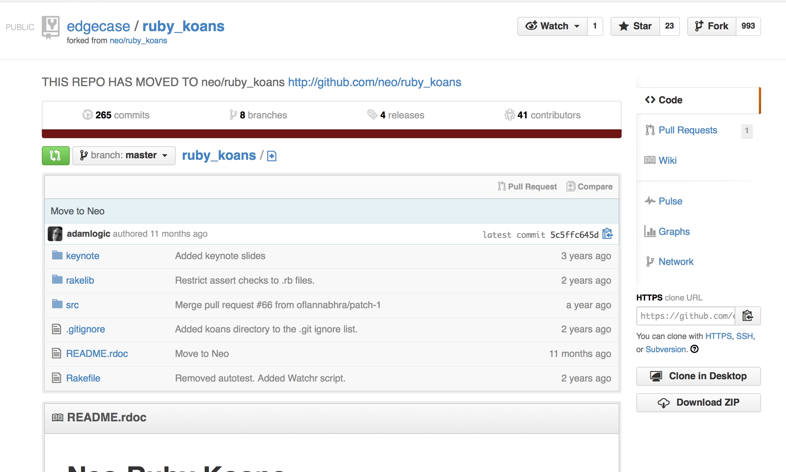
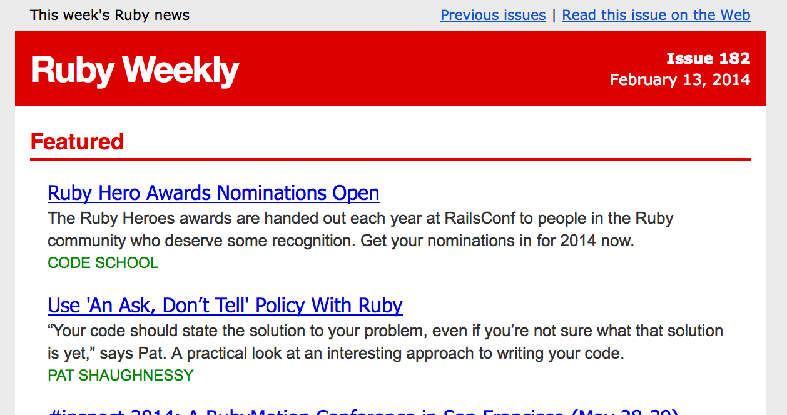
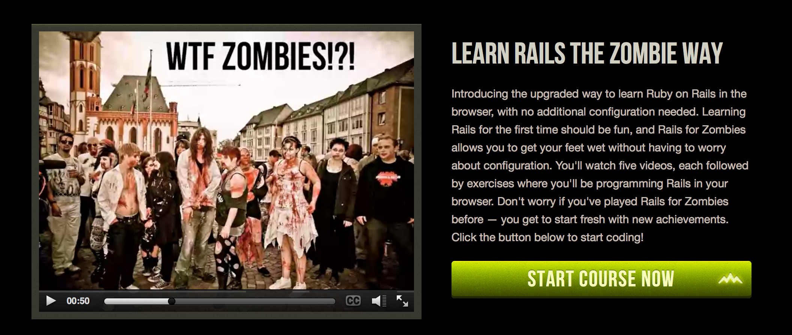

Matz is nice so we are nice.
Topics
- Resources
- A Little History
- What is Ruby
- Getting Ruby
- Using Ruby
Ruby Koans

https://github.com/edgecase/ruby_koans
Poignant Guide to Ruby
http://mislav.uniqpath.com/poignant-guide/
Ruby Weekly

http://rubyweekly.com/
Rails for Zombies

http://railsforzombies.org/
But first, a little history...
- Created in 1994 by Matz
- Intended to be like Perl, but more readable
- Pickaxe book written by Dave Thomas in 2000, opening ruby to the English speaking world.
- DHH (37Signals) releases Ruby on Rails, community exploded
What is Rubby
- Procedural
- Object Oriented
- Functional?
- Dynamic
- Duck Typed
Getting Ruby
Mac OS X System Ruby-
Ruby Version Manager
- RVM
- rbenv
- chruby
This slideshow and all sources and notes can be found on github.